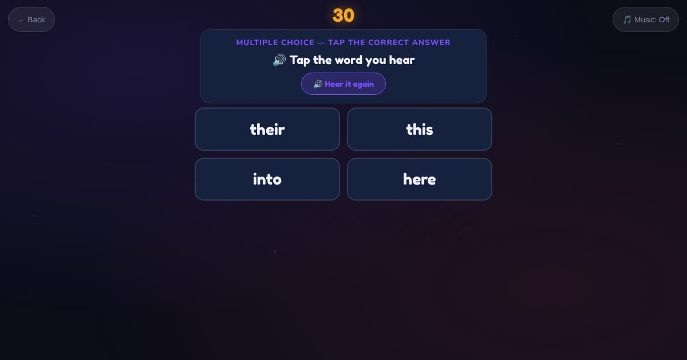

For teachers and tutors
About Sight Words
A game for high-frequency sight words like the, and, you, was, have, come, would and little. Many of them cannot be sounded out, so learners need to know them by sight. The learner hears the word and taps it from four written words.

How to play
- Listen to the word.
- Read the four words.
- Tap the one you heard.
Play it as a class
Choose Sight Words in the Teacher Game for a quick warm-up.